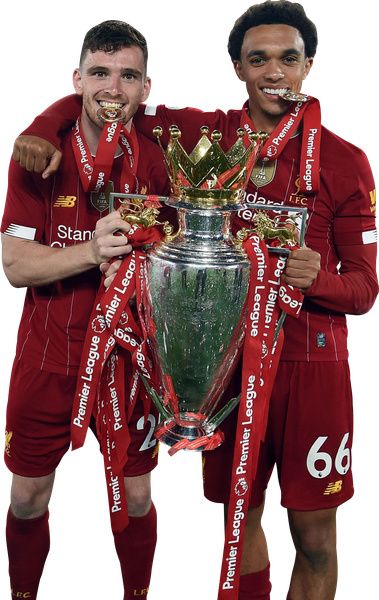
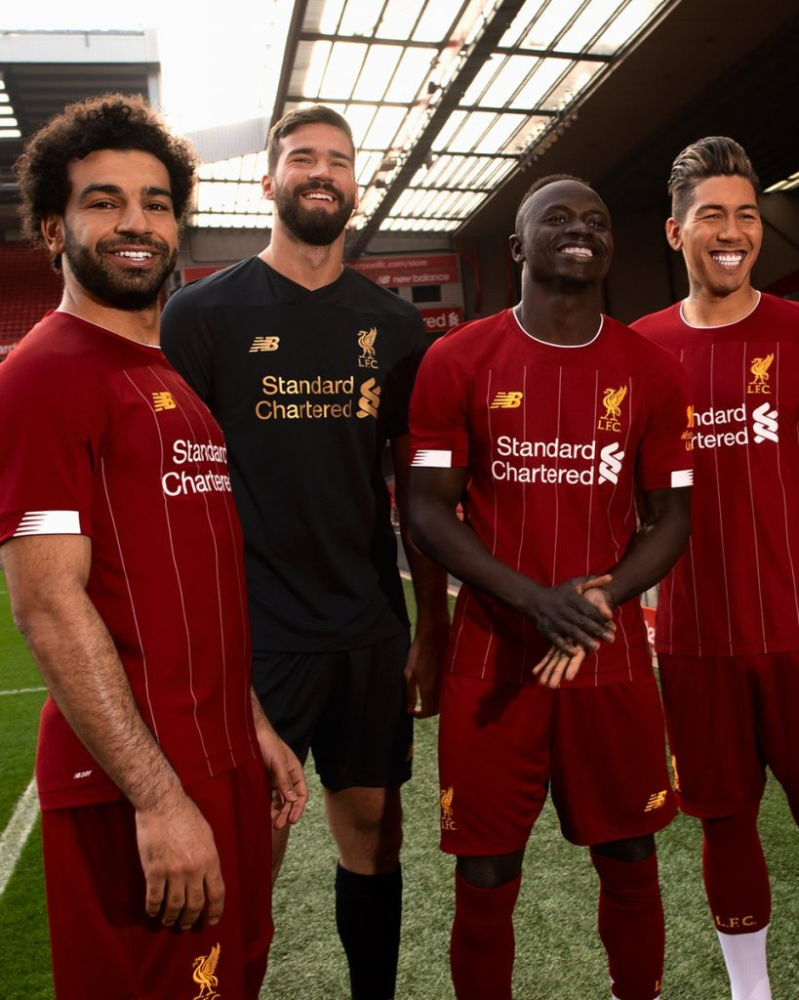
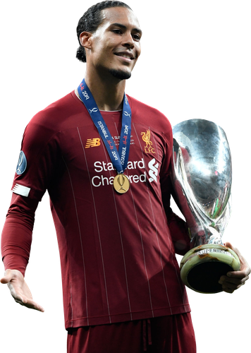
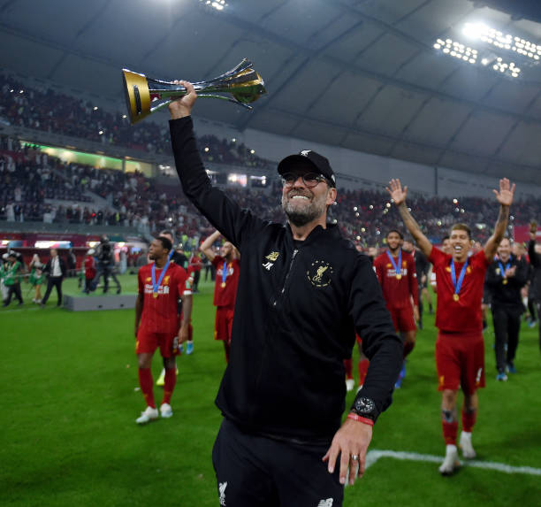
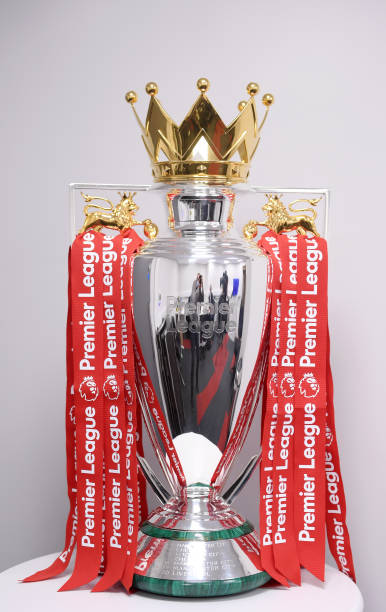
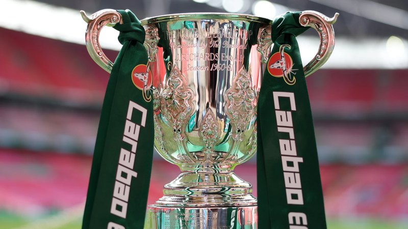
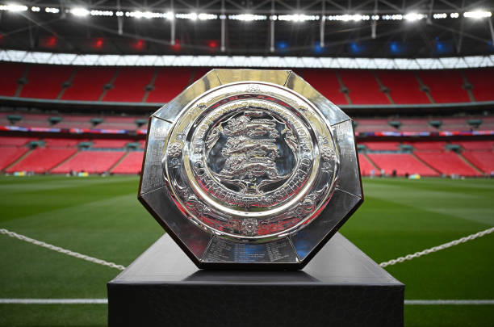

Stagione 2019/20


Andamento della stagione
Arriva il campionato che il Liverpool aspettava dal 1990: 26 vittorie nelle prime 27 giornate, titolo vinto con sette giornate di anticipo (un record) e 99 punti finali. In stagione arrivano anche la Supercoppa UEFA e il Mondiale per Club, mentre in Champions League la squadra esce agli ottavi contro l'Atlético Madrid, poco prima dello stop per la pandemia.
Mercato: un'estate quasi senza spese. Arriva da svincolato il portiere Adrián, decisivo ai rigori nella Supercoppa contro il Chelsea, e a gennaio Takumi Minamino. Partono a fine contratto Daniel Sturridge e Alberto Moreno.
Trofei e competizioni

Champions League
Ottavi di finale

Supercoppa UEFA
Vincitore

Mondiale per Club
Vincitore

Premier League
Vincitore

FA Cup
Ottavi (5T)

Carabao Cup
Quarti di finale

Community Shield
Finalista